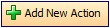
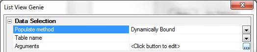
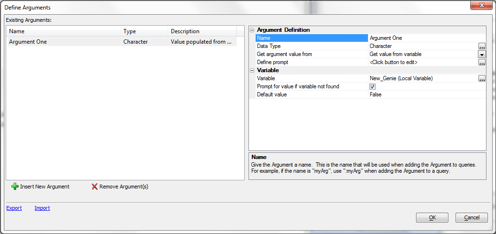

Define Arguments Dialog
You use Arguments with the
List View Genie to pass parameters to the
Define SQL Statement dialog box.
The List View Genie works to help you present a user with a list
of either static or dynamic choices. To reach the List View
Genie from the Control Panel in a Workspace first click the
Code tab. Select
New from the top of the control
panel and then select Script (using Action
Scripting) from the dropdown. Click the
Add New Action button that appears
at the top of the Code Editor.

This will open the
Select Action Dialog. Scroll
through the Category options on the Left of the dialog and
select the 'Xdialog Windows' option
at the very bottom of the list. Click Display an Xdialog Box
option that appears in the Action list on the right. Click
OK. The
Script Genie: Display an Xdialog Box
Dialog will appear. Give your Variable a name in the
Variable Name box in the Define
Variable container. This will make available the Style options
at the bottom of the Define Variable container. Scroll
down towards the bottom of the Style
list and select a List View Control.
Click the Define List View Control
button underneath the Style list box. This will
load the List View Genie.

When the Genie loads you may
notice that an arguments option is missing. Change the
Populate method option from 'Prepopulate
from Static List' to either 'Prepopulate
from Data Source' or 'Dynamically
Bound'. This will open an Arguments option. Click the
dotted button on the right to edit Arguments. This will open the
Define Arguments Dialog.
|
To create an
argument:
Click Insert New Argument.
Enter the name of
the argument into the Argument Name > Name
field.
Select the data type
of the argument in the Argument Name > Data-type
list. The options are:
"Character"
"Numeric"
"Logical"
"Date"
-
"Time"
-
"Y-Shorttime"
-
"K-UUID"
Define the type of
source of the argument's value in the Argument Name
> Get argument value from list. The options are:
If you selected to
get a value from a variable in step 4, select the variable's scope in
the Variable > Variable Scope list. The options
are:
"Local Variable"
"Session Variable"
-
Enter or select the
name of the variable in the Variable > Variable
Name list.
-
Optionally, select
"True" in the Variable > Prompt for value
if variable not found list if you want to prompt the user for a
value at run time.
-
Click OK
to continue.

See Also
Specify Filter Dialog,
Specify Order Dialog,
Define Prompt Dialog,
Specify Filter Dialog